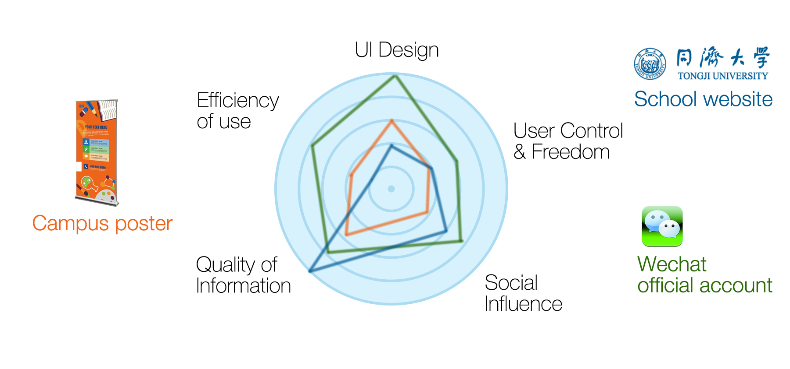
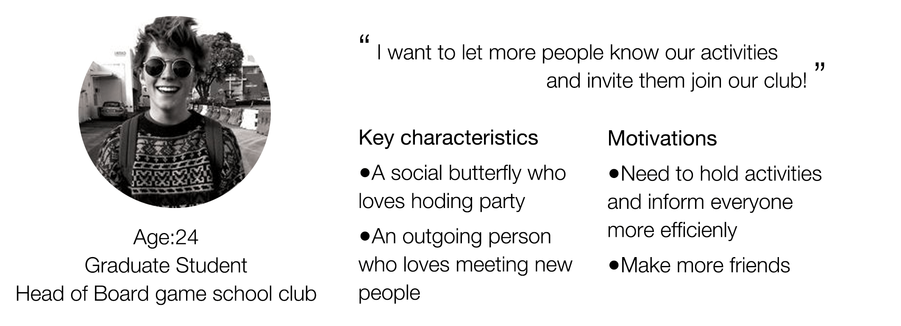
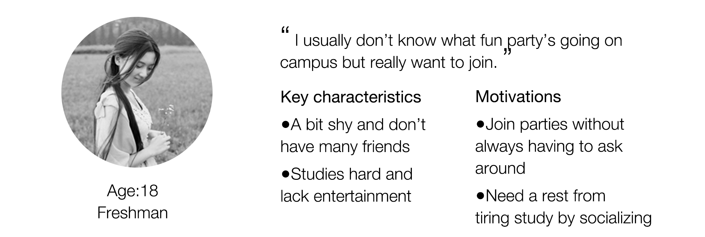
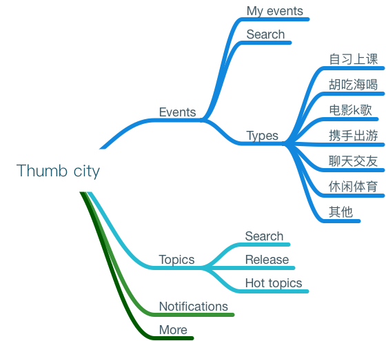
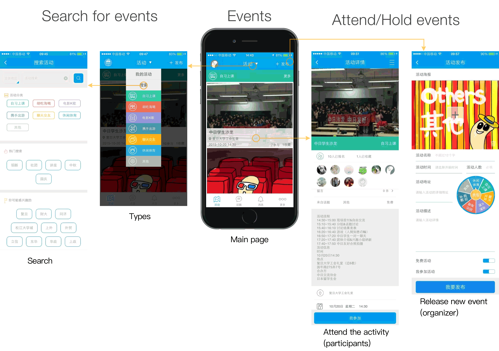
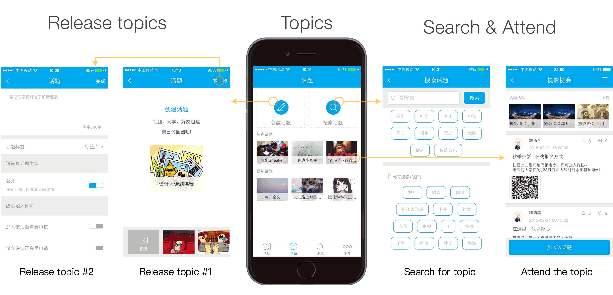

Thumb City
Campus Platform
Design Opportunity
Students always find it hard to know the latest activities going on on campus. So we designed thumb city an iPhone app aiming to release activities and news on campus for students to remain better updated about college life.
Interview
We interviewed over 200 students from our school, half male half female.
Q1. Do you have trouble searching various info about school? Describe it.
Q2. Through what do you get information about what is going on school most?
Q3. Why do you use this way? What’s good and bad about it?
Competitive Analysis
By analysing three different kinds of communication media that spreads school information, we made a radar diagram showing their strengths and weaknesses in five aspects. We thought good quality of information combines with better user control and freedom would be an opportunity space to step into.
Persona
Our research led us to develop the following personas which help us focus on users’ needs.
 Key Experiences
Based on the customer interviews and competitive analysis, we decided the key experiences that our product should provide.
Then we decided main structure of the app. 
UI Design
1.Logo
In China, we call people who use cell phone a lot ‘clan of the thumbs’. Based on this, we decided to name the app ‘thumb city’ since it needs users to tap their phones.
The logo symbolizes thumb and expresses a happy mood.
2.Interface

